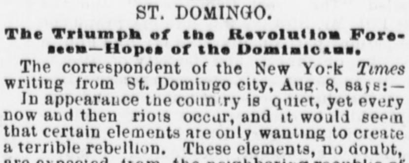
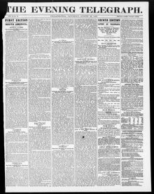

Domingo city, Aug 8, safe: In appearance the conn ry isCiudad de Santo Domingo, 8 de agosto, a salvo: En apariencia el país se encuentra
The Evening Telegraph. Philadelphia [Pa.], August 22, 1868. Page 1. View the originalVer el original


See the full pageVer la página completaWriting from St. Domingo City on August 8, a New York Times correspondent reported that President Baez's enemies assembled in Hayti are awaiting the downfall of Salnave to cross the frontier and incite a rebellion, prompting Baez to bolster his border forces and release prisoners to join the army. Baez is also awaiting a delayed European loan and pinning hopes on the sale of a tract of land to the United States for $2,000,000 through his agent, Colonel Fabeus, with the bargain reportedly already closed with Mr. Seward. Meanwhile, General Luperon has been proclaimed Commander-in-Chief of the impending rebellion to overthrow Baez.Escribiendo desde la ciudad de Santo Domingo el 8 de agosto, un corresponsal de The New York Times comunicó que los adversarios del presidente Báez congregados en Haití aguardaban la caída de Salnave para cruzar la frontera y desatar una rebelión, lo que llevó a Báez a reforzar sus destacamentos fronterizos y excarcelar presidiarios para engrosar el ejército. Báez esperaba asimismo un demorado empréstito europeo y cifraba sus esperanzas en la enajenación de una franja de tierra a los Estados Unidos por 2.000.000 de dólares por mediación de su agente, el coronel Fabens, negocio presuntamente ya concertado con el secretario Seward. Entretanto, el general Luperón había sido proclamado general en jefe del inminente alzamiento armado para deponer a Báez.
FULL TEXT:TEXTO COMPLETO:
ST. DOMINGO.SANTO DOMINGO.
The Triumph of the Revolution Foreseen—Baez Looking to the United States for Help—Sale of Samana, &c.El triunfo de la revolución previsto—Báez busca ayuda en los Estados Unidos—Venta de Samaná, etc.
ST. THOMAS, Nov. 14, 1868.SANTO TOMÁS, 14 de noviembre de 1868.
The latest accounts from St. Domingo show that the government of Baez is tottering to its fall. The people are thoroughly dissatisfied with his administration, and the leaders of the opposition are pushing their advantages in every direction.Las últimas noticias de Santo Domingo muestran que el gobierno de Báez se bambolea hacia su caída. El pueblo está profundamente insatisfecho con su administración, y los jefes de la oposición están aprovechando sus ventajas en todas direcciones.
Another hope for Mr. Baez is the sale of Samana to the United States for $2,000,000. Colonel Fabens, who is now in Washington, is said to be the agent of Baez for that purpose and, in fact, it is asserted that the bargain is already closed between Fabens and Mr. Seward.Otra esperanza para el Sr. Báez es la venta de Samaná a los Estados Unidos por $2,000,000. El coronel Fabens, que ahora está en Washington, se dice que es el agente de Báez para ese propósito y, de hecho, se afirma que el trato ya está cerrado entre Fabens y el Sr. Seward.
Whether this be true or not, it is certain that Baez looks to the United States as his only salvation, and that he is willing to make any sacrifice of territory to retain power.Sea esto verdad o no, es cierto que Báez mira a los Estados Unidos como su única salvación, y que está dispuesto a hacer cualquier sacrificio de territorio para retener el poder.